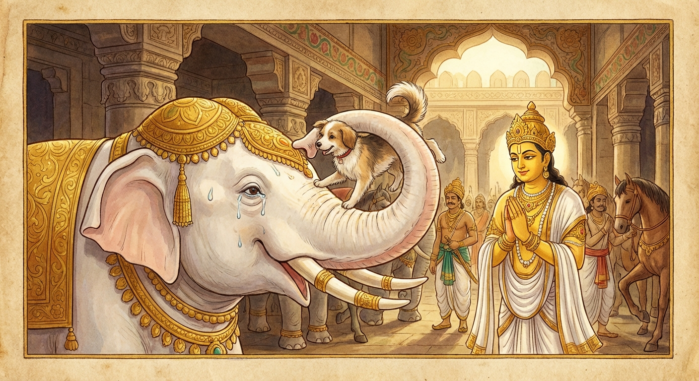

7. අභිණ්හ ජාතකය (27)
“නාලං කබළං පදාතවෙ” යනාදී වශයෙන් එන මේ ජාතක දේශනාව බුදුරජාණන් වහන්සේ ජේතවනයෙහි වැඩවසන සමයෙහි එක්තරා උපාසකයෙකු හා මහලු භික්ෂුවක් අරබයා වදාරන ලදී. සැවැත් නුවර යහළුවෝ දෙදෙනෙක් වූහ. ඔවුන් අතරින් එක් යහළුවෙක් පැවිදි වී දිනපතාම අනෙක් යහළුවාගේ නිවසට යයි. ඔහු භික්ෂුවට දන් දී, තමා ද අනුභව කොට, ඔහු සමඟම විහාරයට පැමිණ, හිරු බැස යන තුරු දොඩමලු වෙමින් හිඳ නැවත නුවරට යයි. අනෙක් තැනැත්තා ද (භික්ෂුව) නගර දොරටුව දක්වාම ඔහු පසුව ගමන් කොට නැවතෙයි. මේ දෙදෙනාගේ මිත්රකම භික්ෂූන් අතර ප්රකට විය. එක් දිනක් භික්ෂූන් වහන්සේලා දම් සභාවෙහි මේ දෙදෙනාගේ මිත්රත්වය පිළිබඳ කතා කරමින් සිටියහ. බුදුරජාණන් වහන්සේ දම් සභාවට පැමිණ “මහණෙනි, දැන් කවර නම් කතාවකින් යුතුව හුන්නහුදැ?” යි විමසූහ. “ස්වාමීනි, මෙබඳු කතාවකින් යුතුව සිටියෙමු” යි භික්ෂූන් වහන්සේලා පැවසූහ. එවිට බුදුරජාණන් වහන්සේ, “මහණෙනි, මොවුන් විශ්වාසවන්ත වූයේ දැන් පමණක් නොවේ, පෙර ද මොවුහු ඔවුනොවුන් කෙරෙහි විශ්වාසවන්තවම විසූහ” යි වදාරා අතීත කතාව ගෙනහැර දැක්වූහ.
අතීතයෙහි බරණැස් නුවර බ්රහ්මදත්ත රජු රාජ්ය කරන කල්හි බෝසතාණන් වහන්සේ ඔහුගේ ඇමතිවරයා වූහ. එකල එක් සුනඛයෙක් මංගල ඇතුන් සිටින හළට ගොස්, මංගල ඇතා ආහාර ගන්නා තැන වැටී තිබුණු බත් ඇට කයි. ඒ සුනඛයා එම ආහාරයෙන්ම වැඩෙමින්, මංගල ඇතාගේ මිත්රයෙක් විය. ඇතා අසලම හිඳ ආහාර ගනී. දෙදෙනාටම ඔවුනොවුන්ගෙන් වෙන්ව සිටිය නොහැකි විය. ඒ ඇතා සුනඛයා සොඬින් ගෙන ඔබමොබ සොලවමින් සෙල්ලම් කරයි; ඔසවා කුම්බස්ථලය මත්තෙහි (හිස මත) තබයි. එක් දිනක් ගම්වැසි මිනිසෙක් ඇත් ගොව්වාට මුදල් දී එම සුනඛයා ගෙන තම ගමට ගියේය. එතැන් පටන් ඒ ඇතා සුනඛයා නොදැක (ශෝකයෙන්) ආහාර නොකයි; පැන් නොබොයි; ස්නානය නොකරයි. මේ කාරණය රජතුමාට දැන්වූහ. රජතුමා බෝසතාණන් වහන්සේව පිටත් කරමින්, “පණ්ඩිතයෙනි, යන්න. කවර හේතුවක් නිසා ඇතා මෙසේ කරන්නේ දැයි දැනගන්න” යැයි පැවසීය.
බෝසතාණන් වහන්සේ ඇත්හළට ගොස් ඇතාගේ දොම්නස් ස්වභාවය දැක, “මොහුගේ ශරීරයේ කිසිදු රෝග ලක්ෂණයක් පෙනෙන්නට නැත. මොහු
කිසිවෙකු සමඟ හෝ දැඩි මිත්රත්වයෙන් සිටියා විය යුතුය. ඔහු නොදැකීමෙන් ඇති වූ ශෝකයෙන් මෙසේ මඩනා ලද්දේ යැයි
සිතමි” යි අදහස් කොට ඇත් ගොව්වාගෙන් විමසූහ.
“මොහුට කිසිවෙකු සමඟ විශ්වාසවන්ත මිත්රකමක්
තිබුණේද?”
“එසේය ස්වාමීනි, එක් සුනඛයෙකු සමඟ බලවත් මිත්රකමක් තිබුණි.”
“දැන් ඒ සුනඛයා කොහිද?”
“එක්
මිනිසෙකු විසින් ගෙනයන ලදී.”
“ඔහුගේ වාසස්ථානය දන්නෙහිද?”
“නොදනිමි ස්වාමීනි.”
බෝසතාණන් වහන්සේ රජු
වෙත ගොස්, “දේවයන් වහන්ස, ඇතාට කිසිදු කායික ආබාධයක් නැත. නමුත් එක් සුනඛයෙකු සමඟ දැඩි විශ්වාසවන්තකමක් තිබිණි.
ඌ නොදැකීම නිසා ආහාර නොගන්නා බව මම සිතමි” යි පවසා මෙම ගාථාව වදාළහ.
“නාලං කබළං පදාතවෙ, න ච පිණ්ඩං න කුසෙ න ඝංසිතුං;
මඤ්ඤාමි අභිණ්හදස්සනා, නාගො ස්නෙහමකාසි
කුක්කුරෙ”ති.
“මංගල ඇතා කබලක් (බත් පිඩක්) වත් ගැනීමට සමත් නොවේ; බත් මුලක් වත් ගැනීමට නොහැකිය; තණකොළ
කෑමට ද නොහැකිය; නාවන විට ඇඟ ඇතිල්ලීමට ද ඉඩ නොදෙයි. සුනඛයා නිතර දැකීමෙන්, ඇතා ඔහු කෙරෙහි ස්නේහය ඇති කරගෙන
ඇතැයි මම සිතමි.”
එහි නාලං යනු සමත් නොවේ යන්නයි. කබළං යනු ආහාර ගන්නා වේලාවෙහි පළමුවෙන්ම දෙනු ලබන කුළු බත් පිඩයි. පදාතවෙ යනු පාදාතවෙ (ගැනීමට) විය යුතු තැන සන්ධි වශයෙන් ‘ආ’ කාරය ලොප් වී ඇත; එයින් අදහස් වන්නේ ‘ගැනීමට’ යන්නයි. න ච පිණ්ඩං යනු ගුලි කොට දෙනු ලබන බත් පිඬක් වත් ගැනීමට සමත් නොවේ. න කුසෙ යනු කෑම පිණිස දෙන ලද තණකොළ ද ගැනීමට නොහැකිය. න ඝංසිතුං යනු නාවන කල්හි ශරීරය ඇතිල්ලීමට ද ඉඩ නොදෙයි (අසමත්ය). මෙසේ යම් යම් දෙයක් කිරීමට ඒ ඇතා අසමත් ද, ඒ සියල්ල රජතුමාට දන්වා, ඒ අසමත් වීමට හේතුව වශයෙන් තමා නුවණින් වටහා ගත් කාරණය ප්රකාශ කරමින් බෝසතාණන් වහන්සේ “මඤ්ඤාමි” (මම සිතමි) යනාදී ධර්ම දේශනාව සිදු කළහ.
රජතුමා ඔහුගේ වචනය අසා, “පණ්ඩිතයෙනි, දැන් කුමක් කළ යුතුදැ?” යි විමසුවේය. “දේවයන් වහන්ස, අපගේ මංගල ඇතාගේ මිතුරුවූ සුනඛයා එක් මිනිසෙක් රැගෙන ගොස් ඇත. යමෙකුගේ නිවසක ඒ සුනඛයා සිටීද ඔහුට මෙපමණ දඩයක් නියම කරනු ලැබේ යැයි නුවර පුරා අණබෙර යැවිය මැනවැ” යි බෝසතාණන් වහන්සේ කීහ. රජතුමා එසේ කරවීය. ඒ පුවත අසා සුනඛයා ගෙනගිය මිනිසා ඌව මුදා හැරියේය. සුනඛයා වේගයෙන් දිවවිත් ඇතා සමීපයටම ගියේය. ඇතා ඌව සොඬින් ගෙන කුම්බස්ථලය මත්තෙහි තබා, හඬා වැළප, බිමට බස්වා, ඌට ආහාර කවා පසුව තමා ද ආහාර ගත්තේය. “තිරිසන් සතෙකුගේ අදහස් පවා දන්නේ යැයි” පැහැදුණු රජතුමා බෝසතාණන් වහන්සේට මහත් වූ යස සම්පත් ලබා දුන්නේය.

ශාස්තෘන් වහන්සේ, “මහණෙනි, මොවුන් විශ්වාසවන්ත වූයේ දැන් පමණක් නොවේ, පෙර ද විශ්වාසවන්තවම විසූහ” යි වදාරා, මෙම ධර්ම දේශනාව ගෙනහැර දක්වා, චතුරාර්ය සත්ය ප්රකාශ කිරීමෙන් කතාව අවසන් කොට පූර්වාපර සන්ධි ගළපා ජාතකය නිමවා වදාළ සේක. (මෙම චතුරාර්ය සත්ය කතාවෙන් අවසන් කිරීම සියලු ජාතකයන්හි ඇත. එබැවින් යම් තැනක එහි විශේෂ ආනිශංසයක් පෙනේ නම් අපි එහිදී පමණක් එය දක්වන්නෙමු).
“එකල්හි සුනඛයා වූයේ මේ උපාසකයා ය. ඇතා වූයේ මහලු තෙරුන් වහන්සේ ය. රජතුමා වූයේ ආනන්ද තෙරුන් ය. නුවණැති ඇමතිවරයා වූයේ මම ම යැයි” (බුදුරජාණන් වහන්සේ තමන් වහන්සේව හඳුන්වා දුන් සේක).
හත්වන අභිණ්හ ජාතක වර්ණනාව නිමාවිය.